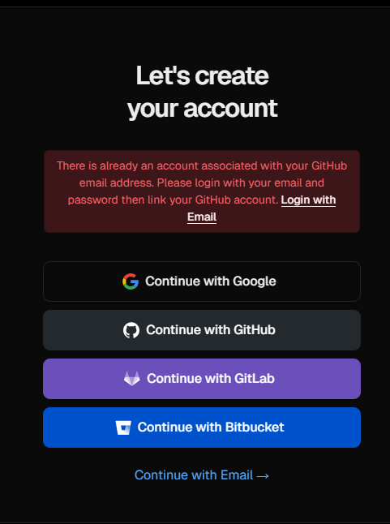

Professor, um aviso, tentei criar uma conta no vercel e heroku, e ambos me deram o seguinte problema:
Tentei com mais de uma conta de email diferentes, e recebi o mesmo erro, deve ser algo com relação a segurança.
Por isso, Diogo Henrique subiu em conjunto comigo esta página no Vercel.
Aqui está o link do repositório original: https://github.com/virnaamaral/cloudcomp.git
Qualquer coisa, só falar comigo! =D